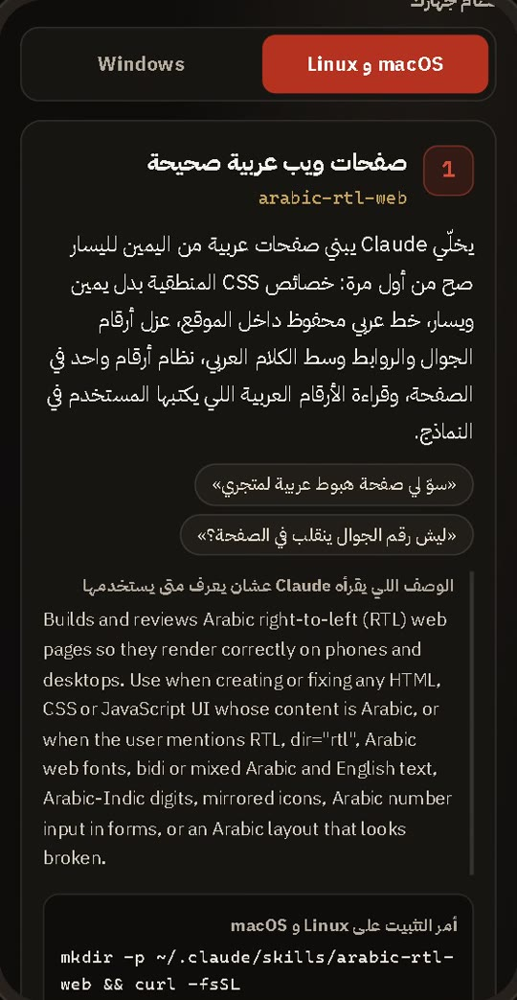
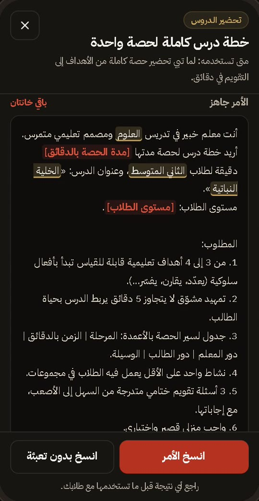
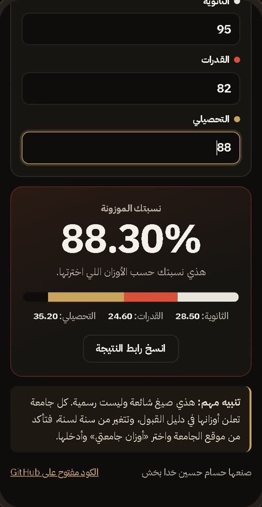
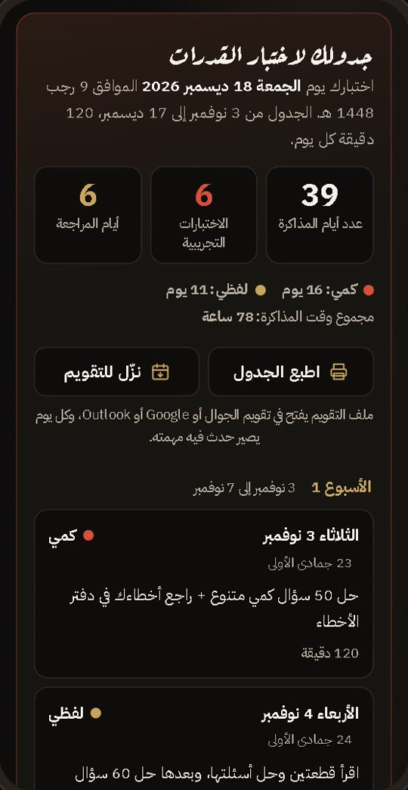
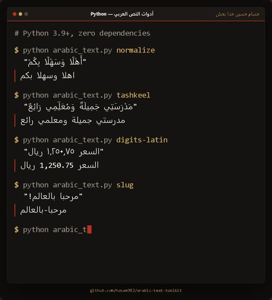

حسامحسين خدا بخش
طالب ثانوي في جدة. أبني أدوات عربية صغيرة ومفتوحة المصدر، كل وحدة تحل مشكلة شفتها حولي.
الأدواتالأدوات
ست أدوات، كل وحدة لها رابط تجربة وكود مفتوح. اضغط على أي سطر.
01مهارات Claude بالعربي

أربع مهارات جاهزة لـ Claude Code، تخليه يشتغل بخبرة محددة في شغلنا العربي بدل الكلام العام. كل مهارة ملف نص واحد تقدر تقراه قبل ما تثبته.
- صفحات ويب عربية من اليمين لليسار بشكل صحيح
- مراجعة الكتابة الفصيحة: الخطأ والصواب والسبب
- تقارير مدرسية بدون أرقام مخترعة، والتاريخ الهجري
13 اختبار تلقائي 4 مهارات MIT
02أوامر الذكاء الاصطناعي للمعلم

30 أمرًا عربيًا جاهزًا للمعلم، تشتغل مع ChatGPT أو Claude أو Gemini. تعبّي الفراغات بمادتك وصفك، والأمر يتجهز قدامك وتنسخه بضغطة.
- ستة أقسام: التحضير، الاختبارات، الخطط العلاجية، التقارير، أولياء الأمور، الأنشطة
- كل أمر يحدد للمساعد دوره وشكل الإجابة
- يمنعه يخترع أسماء طلاب أو درجات
17 اختبار تلقائي 30 أمر جاهز MIT
03حاسبة النسبة الموزونة

تحسب نسبتك الموزونة للقبول في الجامعات السعودية من الثانوية والقدرات والتحصيلي، وتقولك كم تحتاج في التحصيلي عشان توصل النسبة اللي تبيها.
- وضع «كم أحتاج؟» ويقولك إذا الهدف مستحيل
- تدخل أوزان أي جامعة بنفسك
- تقبل الأرقام العربية والإنجليزية
9 اختبارات تلقائية 0 مكتبات خارجية MIT
04فاحص قوة كلمة المرور

أداة تعليمية تفحص كلمة المرور وتشرح لك بالعربي ليش هي ضعيفة، بنفس طريقة تفكير المخترق. كل الفحص داخل متصفحك، وكلمتك ما تطلع من جهازك.
- تقدّر وقت التخمين أونلاين وأوفلاين
- تكشف الكلمة العربية المكتوبة بكيبورد إنجليزي، مثل hgsghl
- تولّد عبارة مرور عشوائية قوية
20 اختبار تلقائي 0 يطلع من جهازك MIT
05جدول مذاكرة القدرات والتحصيلي

تختار اختبارك وموعده وأيامك ووقتك، ويطلع لك جدول مذاكرة يوم بيوم لين يوم الاختبار، بالتاريخين الميلادي والهجري.
- اختبار تجريبي كل أسبوع، ومراجعة شاملة قبل الاختبار
- توزيع عادل للأيام على المواد حسب الوزن اللي تختاره
- تطبعه أو تضيفه لتقويم جوالك
12 اختبار تلقائي 0 مكتبات خارجية MIT
06أدوات النص العربي

مكتبة بايثون في ملف واحد بدون أي مكتبة خارجية، تنظّف النص العربي وتقيسه، ومعها أداة سطر أوامر جاهزة.
- تحذف التشكيل والتطويل وتوحّد أشكال الحروف
- تحوّل الأرقام العربية إلى 0-9 وبالعكس
- تعدّ الكلمات وتسوي روابط نظيفة من العناوين
72 اختبار تلقائي 0 مكتبات خارجية MIT
كيف أبنيها
- عربيةمن اليمين لليسار، وتفهم الأرقام العربية
- في جهازكبدون سيرفر ولا تحليلات
- مجرّبة143 اختبار تلقائي
- مفتوحةالكود كامل برخصة MIT